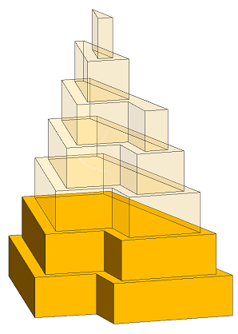

resetGeometry operation
resetGeometry
Resets the geometry to the initial shape's state. Further,
- trim planes are removed,
- shape attributes remain unchanged, but scope and pivot are reset to the initial shape's state,
- rule attributes remain unchanged (see CGA attributes),
- projection matrices remain unchanged (see setupProjection)
Related
Examples
Recursive setbacks

const maxGFA = 5000
const floorHeight = 10
Example -->
color("#FFAA00")
SetBackRec(0, 0)
SetBackRec(sumGFA, iFloor) -->
resetGeometry()
setback(iFloor*3) {
all : NIL |
remainder : Floor(sumGFA + geometry.area, iFloor)
}
Floor(sumGFA, iFloor) -->
CreateFloor(sumGFA, iFloor)
SetBackRec(sumGFA, iFloor + 1)
CreateFloor(sumGFA, iFloor) -->
set(material.opacity, case sumGFA > maxGFA : 0.1 else : 1)
t(0, iFloor*floorHeight, 0)
extrude(floorHeight)
Setbacks are applied recursively in order to create a sum of floor areas (gross floor area). Each setback shall be applied with respect to the initial shape. Therefore, the geometry is reset before the setback is applied. Note how shape attributes (here the color) are not changed.